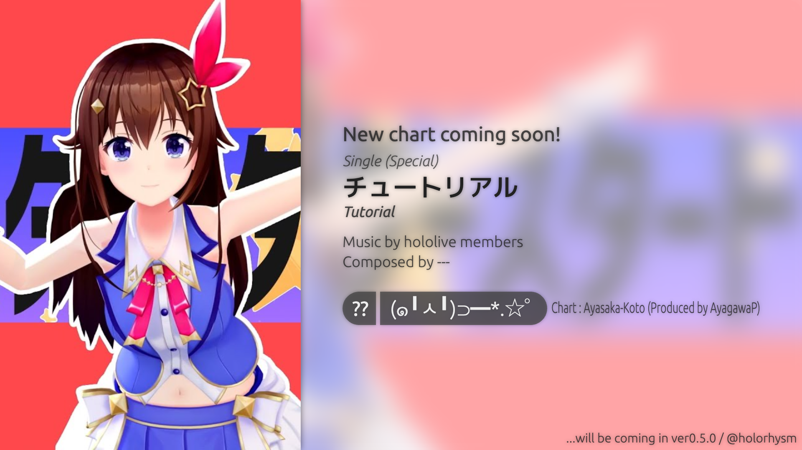
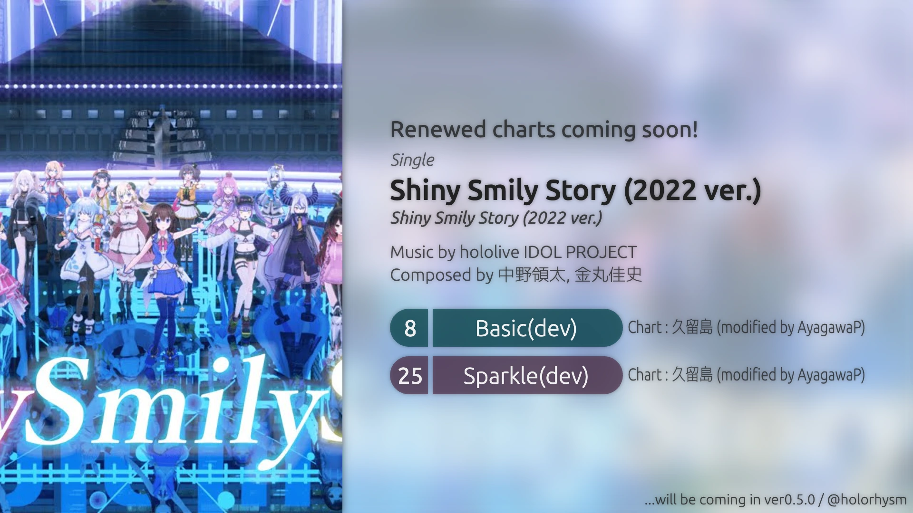

Release Note
アップデート情報
ver0.5.4
Released on 2024-10-05
バグ修正
セッションが開始できないことがある
一部の環境でセッションを開始できないことがある不具合を修正しました。
設定画面のスクロールができない
設定画面の縦方向スクロールが無効化されている問題を修正しました。
角が丸い端末やノッチのある端末で一部UIが隠れる
一部端末でUIが隠れる問題を修正しました。
Push以外のノーツの判定位置がずれる
Push以外のノーツの判定に判定タイミング調整の設定が適用されていない問題を修正しました。
その他
デコレーター透明度設定
デコレーターのうち、ロングノーツとして配置されているデコレーターは透明度設定が反映されなくなりました。
ver0.5.3
Released on 2024-09-17
バグ修正
プレイが開始できないことがある
稀にセッションを開始できないことがある不具合を修正しました。
その他
デコレーターの描画
一部デコレーターの描画色を変更しました。
ver0.5.2
Released on 2024-09-13
新機能
ノーツ判定音(β)
Tap, Ex-Tap, Flick, Ex-Flickノーツの判定時に効果音が鳴るようになりました。
この機能はβ版のため、今後のアップデートで仕様および音声が変更される可能性があります。
バグ修正
譜面の描画がされないことがある
ver0.5.1までで発生していたノーツの描画がされなくなるバグを修正しました。
ver0.5.1
Released on 2024-09-08
対応環境の変更
今回のアップデート以降、iOSおよびiPadOSをサポート対象外とします。
内部実装の変更
デコレーターの色の処理を変更
iOS・iPadOSをサポート対象外としたおかげで、デコレーターの"色"の解釈をブラウザ側の実装に100%任せる実装に変更できました。
譜面ファイルのコンテナ化
諸事情で譜面ファイルの形式を変更しました。見た目などに変化はありません。
「ダイヤル画面」の追加
新たにホーム画面から「ダイヤル画面」に飛べるようになりました。今のところ何もありませんがどこかでなにかに使うかもしれません。
既知のバグ
譜面の描画がされないことがある
判定をある程度ずらした状態だと、譜面が描画されないことがあります。
このバグは発生条件を調査中です。
ver0.5.0
Released on 2024-08-30
新機能
全設計の刷新
今回のアップデートでは、全てのコードを一から作り直しています。
これに伴い、UIの変更やパフォーマンス向上が行われています。
設定の充実化
ver0.5.0より、新しい設定項目が追加されています。
より細かい設定が可能となります。
| 設定項目 | 説明 |
|---|---|
| 楽曲オフセット(秒) | 楽曲の再生タイミングを調整します。 |
| 目標フレームレート(fps) | 目安とするフレームレートを設定します。(端末によって効果範囲が異なります) |
| デコレーター透明度(%) | 後述する「デコレーター」の透明度を調整します。 |
| 譜面の解像度(px) | 譜面の描画解像度を指定します。低解像度でプレイすることで負荷が軽減されます。 |
| SE音量(%) | 効果音の音量を調整します。現時点ではボタンクリック音のみに効果があります。 |
| 楽曲音量(%) | 楽曲再生の音量を調整します。 |
楽曲・譜面・イベント
チュートリアル譜面を追加！
デコレーターの追加に合わせて、チュートリアル譜面を追加しました。
| Difficulty | Lv. | Charter | 備考 |
|---|---|---|---|
| (๑╹ᆺ╹)⊃━*.☆ﾟ | ?? | Ayasaka-Koto (Produced by AyagawaP) | 楽曲は『スタースタースタート』 |
『Shiny Smily Story (2022 ver.)』譜面リニューアル

『Shiny Smily Story (2022 ver.)』の元Normal・Hard譜面が、ver0.4.5までの譜面をベースにリニューアルされました。
これに伴い、譜面制作者名義・譜面名称が変更されています。
| 〜ver0.4.5 | → | ver0.5.0〜 | ||||
|---|---|---|---|---|---|---|
| Difficulty | Lv. | Charter | Difficulty | Lv. | Charter | |
| Normal | ?? | 久留島 | → | Basic(dev) | ?? | 久留島 (modified by AyagawaP) |
| Hard | ?? | 久留島 | → | Sparkle(dev) | ?? | 久留島 (modified by AyagawaP) |
既知のバグ
タッチ判定が欠落することがある
iPhoneおよびiPadにおいて、一定以上の速度で連打するとタッチ判定が欠落することがあります。
調査の結果、この問題のholorhysm側での修正は不可能という結論に至りました。
今後のiOS/iPadOS(WebKit)のアップデートにより解消される可能性があります。
検証の結果、常に1点以上指を触れることで判定の欠落をほぼ解消できることが確認されています。
そのため、使用しない指を常に画面に触れておくことで、この問題を緩和することができます。
また、導電性スポンジやタッチペンの先端、みかんの皮やグミなどのタッチパネルを反応させることができるものを画面上に置いておくことでもこの問題を緩和することができる可能性があります。